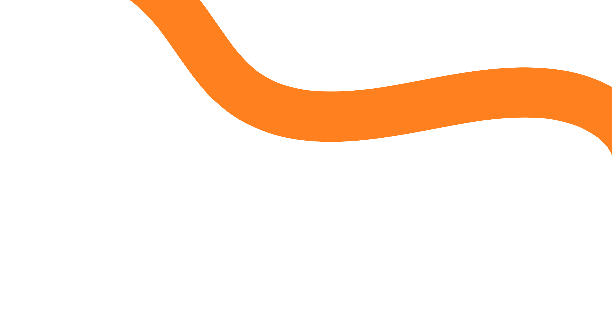
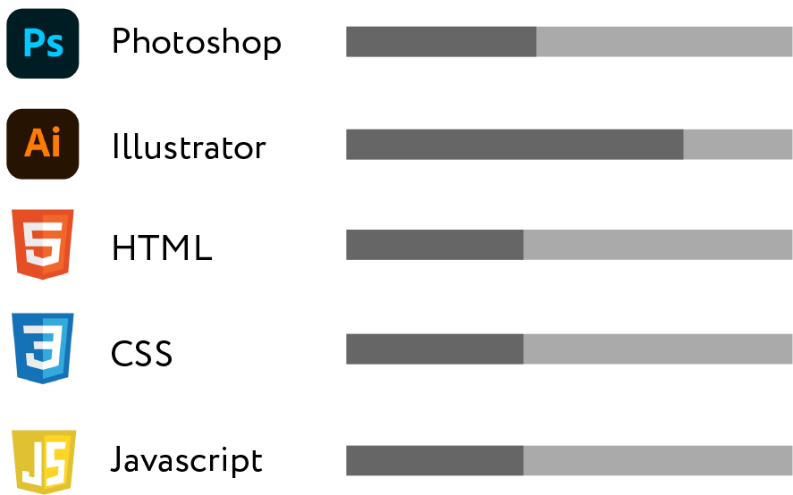
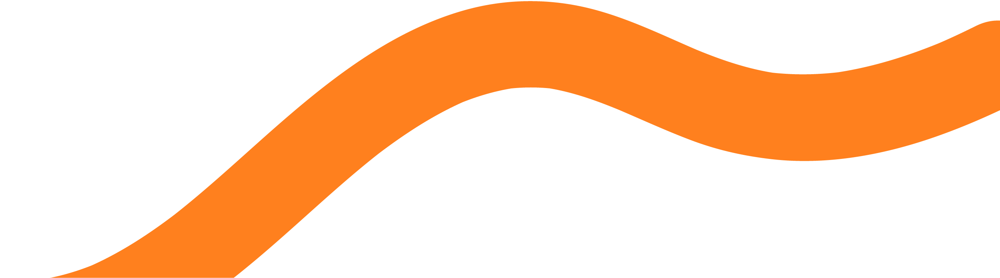

<!DOCTYPE html>
<html lang="ja">
<head>
  <meta charset="UTF-8">
  <meta name="viewport" content="width=device-width, initial-scale=1.0">
  <title>Document</title>
</head>
<body>
  
</body>
</html><html lang="ja">
  <head>
    <meta charset="UTF-8" />
    <meta name="viewport" content="width=device-width, initial-scale=1.0" />
    <link rel="stylesheet" href="./css/reset.css" />

    <!-- slickのCSS -->
    <link
      rel="stylesheet"
      type="text/css"
      href="https://cdn.jsdelivr.net/npm/slick-carousel@1.8.1/slick/slick.css"
    />
    <link
      rel="stylesheet"
      type="text/css"
      href="https://cdn.jsdelivr.net/npm/slick-carousel@1.8.1/slick/slick-theme.css"
    />
    <!-- AOS.jsのCSS -->
    <link href="https://unpkg.com/aos@2.3.1/dist/aos.css" rel="stylesheet" />

    <link rel="stylesheet" href="./css/style.css" />
    <link rel="stylesheet" href="https://use.typekit.net/sbs5xto.css" />
    <link rel="stylesheet" href="https://use.typekit.net/sbs5xto.css" />
    <title>AYA OOMINE</title>

    <!-- jQuery -->
    <script src="https://ajax.googleapis.com/ajax/libs/jquery/3.6.0/jquery.min.js"></script>
    <!-- slickのJavaScript -->
    <script
      type="text/javascript"
      src="https://cdn.jsdelivr.net/npm/slick-carousel@1.8.1/slick/slick.min.js"
    ></script>
    <!-- AOS.jsのJavaScript -->
    <script src="https://unpkg.com/aos@2.3.1/dist/aos.js"></script>
  </head>
<body>
  <header id="header" class="wrapper">
    <nav class="header_nav">
    <h1 class="logo">
      <a href="./index.html"
      ></a>
  </h1>
  <ul class="header__nav-pc">
    <li><a href="./profile.html">About</a></li>
    <li><a href="./works/works1.html">Works</a></li>
    <li><a href="./contact.html">Contact</a></li>
  </ul>
</nav>
<div class="hamburger">
  <span></span>
</div>
<div class="header__nav-sp">
  <ul>
    <li><a href="./profile.html">About</a></li>
    <li><a href="./works/works1.html">Works</a></li>
    <li><a href="./contact.html">Contact</a></li>
  </ul>
</div>
  </header>
  <div>
    
  </div>
  <section id="profile">
    <div class="name_title">
      <h1>大嶺亜矢</h1>
        <p class="profile_name">AYAOOMINE</p>
    </div>
    <div class="profile__sub">
      <h2 class="title"data-aos="zoom-in">あなたの<br class="sp-br" />追いかぜになるように、<br>
        デザインでエールを。
      </h2>
      <p class="profile_text"data-aos="zoom-in">
      10年以上日々じっくりとお客さまに接して来たことで、得られたヒアリング能力と共感力<br>
      を活かし、クライアントさまおひとり、おひとりの想いを汲み取ります。デザインを通<br>
      して解決したいこと、達成したいことを一緒に考え、デザイン制作していきます。
      </p>
    </div>
  </section>
  
  <section id="history"data-aos="fade-up" data-aos-duration="3000">
    
  <ol class="history__list">
    <li class="history_item">
    <h3 class="heading__h3">
      2011年4月
    </h3>
    <h3>ジュエリー販売会社に新卒入社</h3>
    <p>
      あらゆる年代のお客様とのコニュニケーションの取り方、販売の面白さを学ぶ。<br>
      接客ロールプレイングコンテストで北海道大会に出場。
    </p>
  </li>
  <li class="history_item">
    <h3 class="heading__h3">
      2015年3月
    </h3>
    <h3>新店オープンにあたり店長として店舗運営に携わる。</h3>
    <p>スタッフとの信頼関係を築き、チームとして運営することの難しさにぶつかり、<br>
      自分の未熟さを痛感する。</p>
    </li>
  <li class="history_item">
    <h3 class="heading__h3">
      2020年4月
    </h3>
    <h3>コロナ禍の中、2020年度の北海道・東北エリアの中で最優秀店舗に選ばれる。</h3>
    <p>多角的に物事を考えられるようになり、チームワークも良好に築けるようになった。<br>
      会社からの指示事項を理解しつつ、どうすることが自店にとって最善なのかを自発的に考えられるようになった。<br>
      いい空気感・雰囲気を作るために自ら動けるようになった。
      </p>
  </li>
  <li class="history_item">
    <h3 class="heading__h3">
      2022年4月
    </h3>
    <h3>部署異動でブライダル事業（北海道・東北エリア）の営業推進の担当へ</h3>
    <p>担当エリアが一気に広くなり、色んなタイプの店舗を回りながら<br>
      各店の問題・課題に対してヒアリング、問題の洗い出し、仮説を立てて実行と検証をすることで<br>
      少しずつ問題を良い方向に持って行くことができた。</p>
  </li>
  <li class="history_item">
    <h3 class="heading__h3">
      2023年5月</h3>
    <h3>デザインACで自作したPOPが店舗の集客UPに貢献することができた</h3>
    <p>需要のあるお客様に対して適切なデザインの販促があれば、入店客数をもっと増やせるのでは・・・<br>
      と考えるようになる。</p>
  </li>
  <li class="history_item">
      <h3 class="heading__h3">
        2024年1月〜</h3>
      <h3>本格的にwebデザイナーを目指しデザスタに入学!勉強をスタートする。</h3>
  </li>
</ol>
  </section>

  <section id="profile_inner"data-aos="fade-up" data-aos-duration="3000">
  <div class="skill">
    <h4>
      Skills
    </h4>
  <div class="skill_img">
       
  </div>
</div>
<div>
  <div class="strengths">
    <h4>Strengths</h4>	
    <div class="strengths_item">
    <ul>
      <li>
        <span>
          <p>1.</p>
        </span>
          <p>
            ポジティブシンキングです
          </p>
      </li>
      <li> 
        <span>
          <p>2.</p>
        </span>
          <p>
            ヒアリング力があります
          </p>
      </li> 
      <li>
        <span>
          <p>3.</p>
        </span>
          <p>
            コミュニケーション力（話題を探すのが得意です！）
          </p>
      </li>
      <li>
        <span>
          <p>4.</p>
        </span>
          <p>
            努力し続けます！
          </p>
      </li>
      <li>
        <span>
          <p>5.</p>
        </span>
          <p>
            素直です（まずは何でもやってみよう）
          </p>
      </li>
    </ul>
  </div>
</div>
</section>

<section id="favorite"data-aos="fade-up" data-aos-duration="3000">
  <div class="favorite_inner">
  <div class="favorite">
    <h4>
      Favorite
    </h4>
  </div>
  <ul>
    <li class="favorite_text">
      <p>・料理</p>
      <p class="favorite_text_small">（段取り、食品のロスがないようにメニューを考えるのが好きです）</p>
    </li>
    <li class="favorite_text">
      <p>・ちょっといい調味料探し</p>
      <p class="favorite_text_small">（パッケージや容器にグッとくると買ってしまいます）</p>
    </li>
    <li class="favorite_text">
      <p>・インテリアショップめぐり ・柴犬 ・お寿司 ・カレー</p>
    </li>
  </ul>
  </div>
</section>
  <footer id="profile_footer">
    
    <div class="profile_copy">
      <p>©︎2024 AYA  OOMINE</p>
    </div>
  </footer>
  
  <script src="./js/script.js"></script>
</body>
</html>